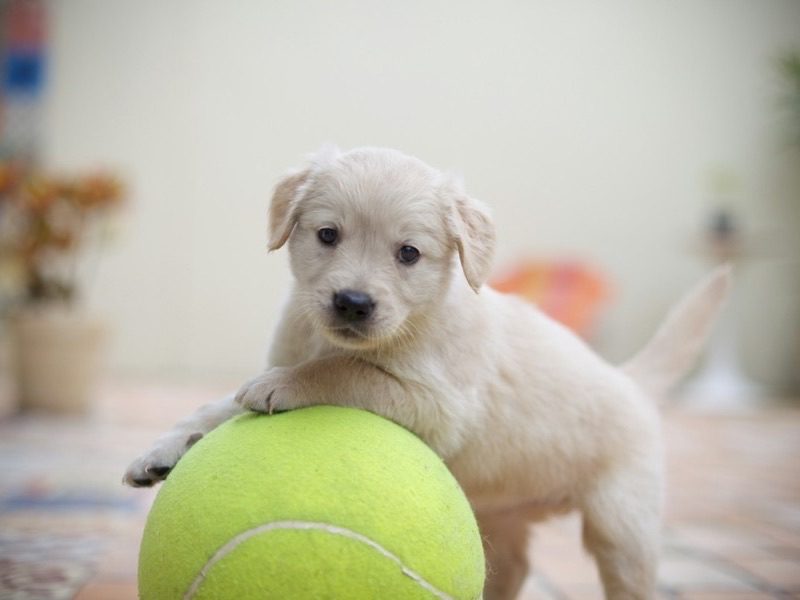
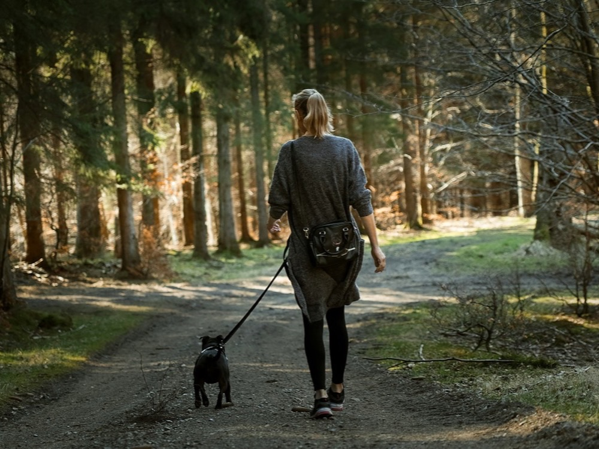

Deux ans d'énergie et de câlins : Milo adore courir et rapporter la balle.
Qui est Milo ?Chaque année, des centaines de chiens et de chats sont abandonnés. Au refuge Les Pattes Libres, nous les recueillons, les soignons et leur trouvons une famille pour la vie.
Voir nos animaux

Deux ans d'énergie et de câlins : Milo adore courir et rapporter la balle.
Qui est Milo ?
Curieuse de tout, Pistache explore chaque recoin et ronronne dès qu'on la prend.
Qui est Pistache ?
À neuf ans, Biscuit rêve d'un canapé moelleux et de promenades tranquilles.
Qui est Biscuit ?
Fondé en 2012 par une poignée de bénévoles, le refuge accueille les chiens et les chats abandonnés ou saisis dans la région lyonnaise. Ils y trouvent un abri, des soins et beaucoup d'attention.
Avant de rejoindre sa nouvelle famille, chaque animal est vacciné, identifié et stérilisé. Nos bénévoles apprennent à le connaître pour lui proposer le foyer qui lui correspond vraiment.
| Notre refuge en chiffre | ||
|---|---|---|
| 1250 animaux adoptés depuis 2012 | 48 pensionnaires attendent une famille | 65 bénévoles mobilisés toute l'année |
« Caramel a changé notre vie. L'équipe a pris le temps de nous conseiller et de nous présenter le chien qui convenait à notre famille. »
Sarah, adoptante de Caramel
« Je cherchais un chat calme pour mon appartement. Grâce aux bénévoles, j'ai rencontré Filou : trois ans plus tard, il dort toujours sur mes genoux. »
Karim, adoptant de Filou